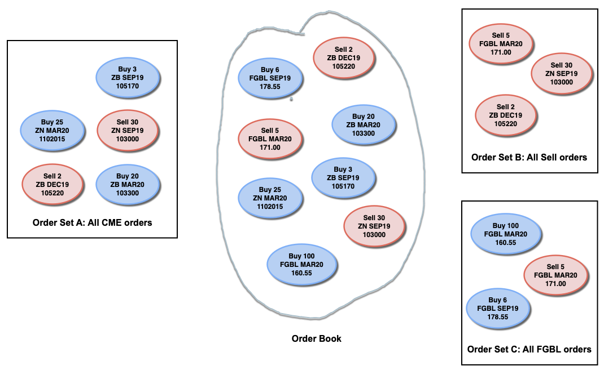

The TT RTD Server allows you to retrieve information about working fills, such as the columns available in the Fills widgets, using an RTD formula.
An RTD Server application accesses order and fill data through an order set. An order set represents a view into the order book, a subsection of all the orders you place in the market. When you create an order set, you create a set of selection rules, called an order selector, that identifies which of the current orders you want to include in the set. For example, you might create one order set that contains all U.S. 30-Year Treasury Bond (ZB) orders and another order set that contains all buy orders. Also, individual orders can appear in multiple order sets.
The following illustration shows three order sets that provide different views into the whole order book.

The RTD formula for getting an order set ID uses the following format.
=RTD("tt.rtd",,"OS",order-property,order-property ...)
where each order-property indicates an Order Book column name and value to include in the order filtering criteria.
Notes:
For example, to create an order set that includes all orders for the ES product on the CME exchange using account ABCDEF, you would enter the following RTD formula:
=RTD("tt.rtd",,"OS","Exch=CME","Product=ES","Account=ABCDEF")
You can use RTD to create custom order books in your spreadsheet. You can use an order set to focus on a particular set of orders and, for each order, include values for columns available in the Order Book.
The RTD formula for retrieving order information uses the following format:
=RTD("tt.rtd",,"Orders",orderbook-columns,num-orders,orderset-id,cell-address)
where:
For example, the following RTD formula retrieves values of six columns for the ten most recent orders within the order set referenced in cell B3. It returns the values in a 6x10 array starting in cell E1.
=RTD("tt.rtd",,"Orders","Exch,Product,Contract,OrdQty,Price,Account","last*10",B3, CELL("Address", E1))
You can use RTD to monitor fills in your spreadsheet. You can use an order set to focus on fills for a particular set of orders and, for each fill, include values for columns available in the Fills widget.
The RTD formula for retrieving fill information uses the following format:
=RTD("tt.rtd",,"Fills",fills-columns,num-fills,orderset-id,cell-address)
where:
For example, the following RTD formula retrieves values of seven columns for the ten most recent fills for the orders defined by the order set referenced in cell B3. It returns the values in a 7x10 array starting in cell E1.
=RTD("tt.rtd",,"Fills","Time,Exch,Contract,Price,FillQty,Fill Type,Account","last*10",B3,CELL("Address", E1))